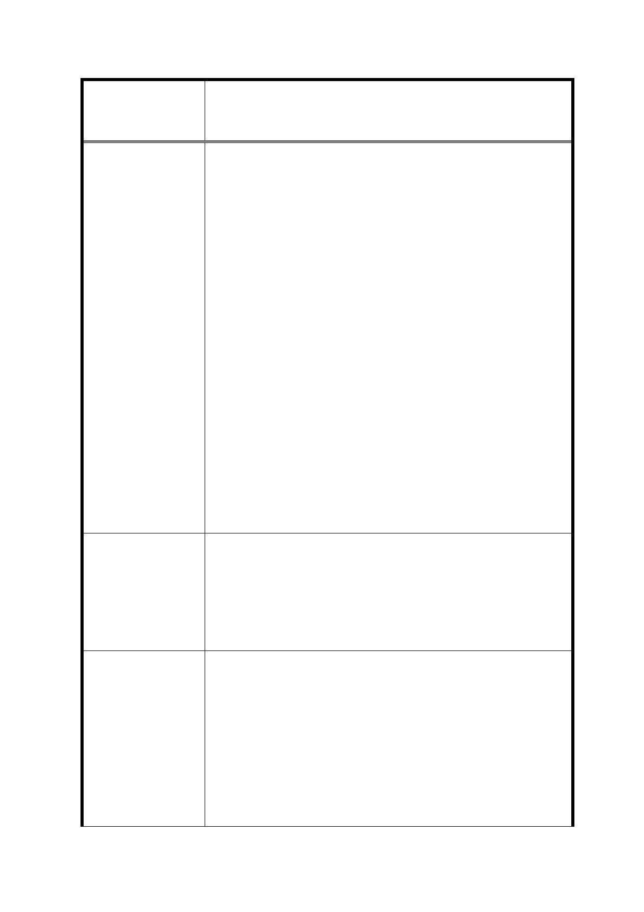

修訂臺北市信義計畫地區細部計畫（第三次通盤
案 名 檢討）案
原信義區內劃設「住商混合用地」於民國 89 年第二次通盤
檢討公告實施（即現行計畫）變更為「特定業務區」，乃藉
由獎勵而鼓勵所有權人自行選擇繳交回饋金作商業使用，並
保留原住戶使用之彈性。土地開發必須尊重市場的導向，如
政府有意推動信義區商辦的發展，應加以提高非住宅開發的
容積或獎勵政策，而不是未經根據變相的懲罰少數地主。依
原細部計畫發展多年的都市脈絡應予以尊重，政府必須要公
平的採納公眾意見訂定政策來引導市場，而不是一意孤行。
此不公平的政策已違背合理的經濟行為，扭曲原始規劃精
神，更導致全區所有權人的權益受損。
現有 B7 的周遭以住宅林立，形成一個社區的氛圍。既有之
空地，如限制為非住宅使用開發，從都市規劃的角度來看已
經不適合。30 米寬的周邊街廓與機能更不適合其他非住宅
使用的開發，限制為非住宅使用開發，未來更加會造成周遭
現有居住里民的不便。此外，B7 的地主人數眾多，整合不
易，多數為當初信義區重劃時所剩下之零星地主。政府長期
以來未能夠因應時勢來放寬最低的開發面積限制或協助整
合，也因此導致 B7 土地長期的空置。區內未開發土地所剩
不多，限制非住宅使用條例，更將是雪上加霜，加深未來
B7 整合的困難。
1. 取消『「特定業務區」不得住宅使用』之條例。
2. 提高並增加「非住宅使用」開發之容積與獎勵政策，鼓勵信
建議辦法
義區非住宅使用的開發。
3. B7 區塊的地主眾多，整合遙遙無期，懇請考慮放寬 B7 最低
的開發面積限制，獎勵並協助開發來達到土地最大的使用效
益與公眾利益。
有關特定業務區（B2-B14、C1、D1-D7、E1-E5）不得作住宅
使用之規定，考量恐影響尚未開發土地(D1、D3、B7)所有權人權
益，故建議仍維持原公展規定，即特定業務區（B2-B14、C1、
D1-D7、E1-E5）除特種零售業、特種服務業、殮葬服務業等不得
市 府 回 覆 意 見 使用外，餘比照臺北市土地使用分區管制自治條例第三種商業區
之使用規定辦理。惟為塑造連續本區沿街商業活動，規定建築物
一樓及二樓不得作住宅、停車及管委會使用，且商業使用樓地板
面積總和須大於法定建築面積之 70％乘以 2 倍；申請增額容積、
移入容積或各類獎勵容積者，一樓至四樓不得作住宅、停車及管
54